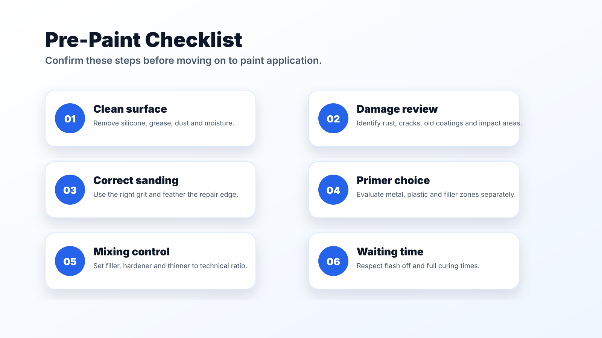
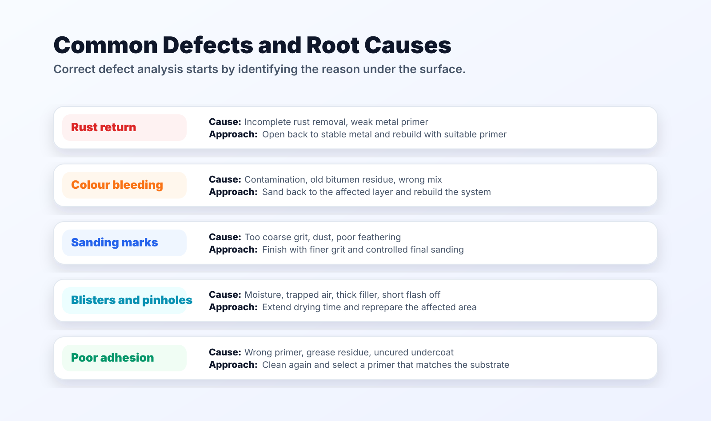
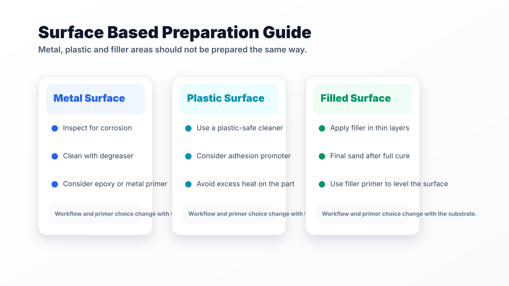

Why preparation matters
A good refinish result is not only about the final coat. Cleaning, degreasing, rust removal, correct sanding and suitable primer selection prepare the lower layers for a safer application.
If preparation is weak, the finish may look acceptable at first but later show rust, swelling, bleeding, sanding marks or adhesion problems.
That is why it is important to identify the substrate correctly, choose materials accordingly and follow the product technical data sheet through the process.
Rust and colour bleeding
Rust must be fully removed from metal surfaces before painting. Skipping metal primer or applying coats too thinly can weaken long term protection.
Bleeding can be related to old coatings, bituminous protection residues, contaminated surfaces or incorrect mixing. The repair normally requires sanding back to the affected layer and rebuilding the system.

Sanding marks, blistering and pinholes
Overly coarse sanding, incorrect tool use or dust left on the surface can show through as visible marks in the topcoat. Edge feathering should not be skipped.
Blistering and pinholes are often linked to moisture, contamination, insufficient filler primer, poor filler mixing or short flash-off times. The affected area should be sanded back and reapplied correctly.
Edge mapping, lifting and poor adhesion
If filler overlaps old paint without control or feathering is weak, edge marks can appear. Missing degreasing before application increases the risk.
Painting over surfaces that have not fully cured, or using wrong flash-off times, can cause lifting. On plastic or filler areas, unsuitable primer selection may also lead to poor adhesion.

Storage and mixing related issues
Paint, thinner, primer and hardener products should be stored at suitable temperatures, with lids closed and shelf life checked.
Thickening, settling or poor mixing can directly affect application quality. For suspicious products, technical data sheets and professional control should be considered.
Good preparation also helps reduce rework, prevent time loss and improve material efficiency during refinishing.